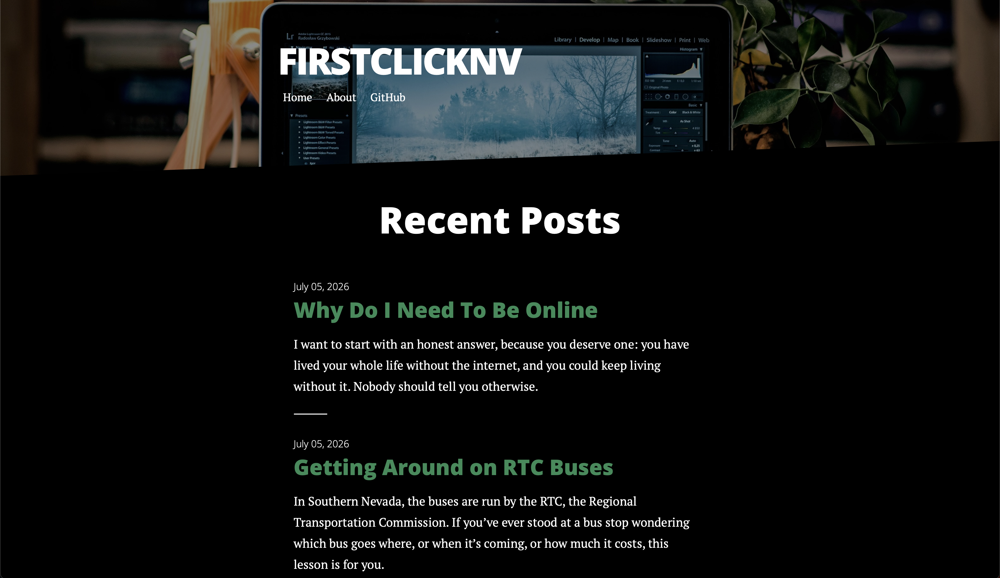
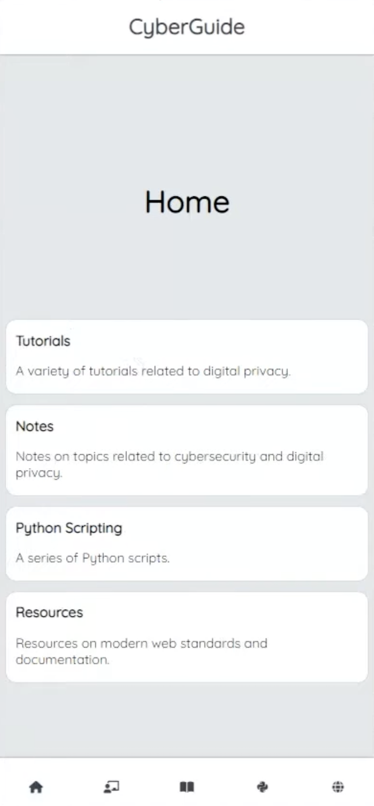
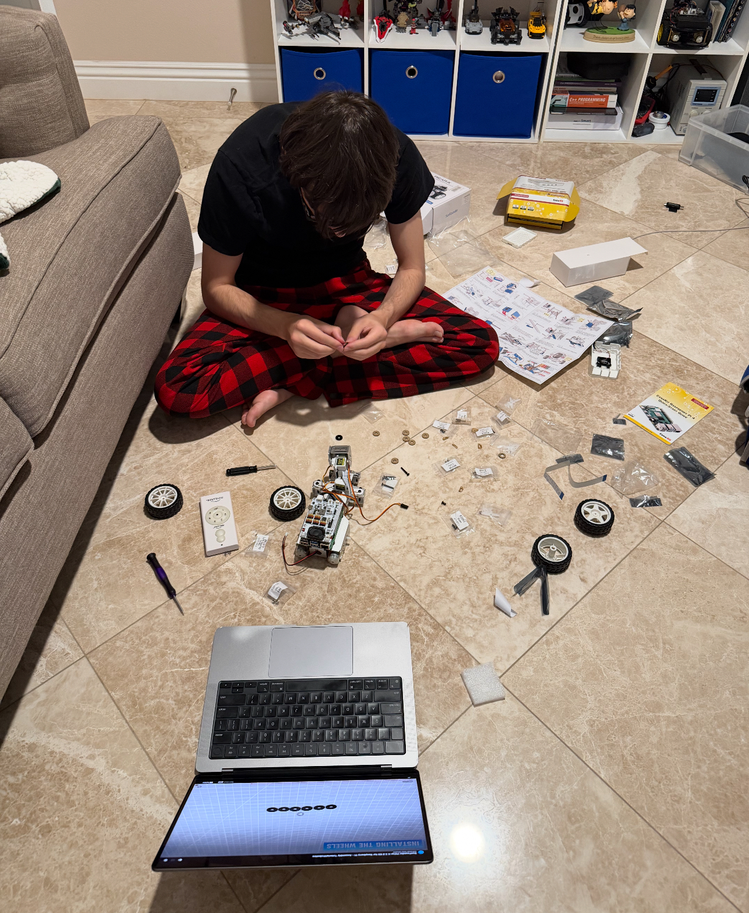

lias Blum
Hardware & Programming
Hardware & Programming
Hey I'm a student from Bishop Gorman High School looking to major in Electrical Engineering
From robotics competitions to self-navigating Raspberry Pi robots, I build projects that combine engineering, code, and curiosity and teach myself whatever it takes to bring them to life.

Hermes is an app that lets the user curate their news sources and build their own media consumption algorithm. It uses third-party libraries to parse RSS and Atom feeds loaded via the Composer package manager.

SpendWise is a budgeting tool for gambling. A large chunk of the Las Vegas economy runs on gambling. I am hoping my app can help with managing spending over the long term. With SpendWise, users can log purchases against a predefined budget and the app reshapes the remaining allowance as time goes on. One of the challenges on this application was adjusting the budget automatically depending on the user's location. While growing up in Las Vegas inspired this idea, I want the app to be usable across the United States.
Runs on a self-managed Linux VPS behind NGINX with SQLite3.

FirstClickNV is a website where I provide guides and resource collections on digital literacy. From applying for jobs online or navigating local government websites, I use my writing and programming skills to make it easier for adults to adapt to modern digital infrastructure in everyday life.

My entry for the 2021 Congressional App Challenge, awarded 3rd place. Cyberguide teaches and provides resources for staying safe online with hands on explanations of common attacks.
This repository holds solutions to the set of programming challenges presented in Codingbat.com along with advent of code challenges.
A notification-enabled timer built on the Web APIs for notification and Progressive Web App enhancements via Workers to remain functional while offline.
A password generator website.
A series of JavaScript language reference excercises to help understand JavaScript.
This video documents my participation in a VEX Robotics tournament, where our team competed in a series of qualifying and elimination matches. Throughout the competition, I worked alongside my teammates to design, build, and refine our robot, applying principles of engineering, programming, and strategic problem-solving under time constraints.
This Raspberry Pi robot runs on Python code to define a pathfinding algorithm with the data from the sensor. Processing these values allows the robot to navigate its surroundings.

This Raspberry Pi robot runs on Python code to identify and classify objects, animals, and people it sees.

My Hermes and Spendwise applications are deployed to a self-managed Linux VPS. I learned about system administration on Ubuntu, managing an NGINX server and processing requests via proxies to PHP and Node.js respectively. I also created scripts to deploy and integrate version control throughout every update to preserve database state in SQLite3.
Worked at theCoderSchool in Las Vegas teaching programming concepts and computer literacy skills for elementary school students.